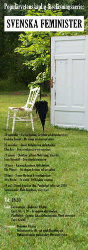
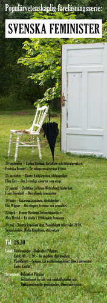
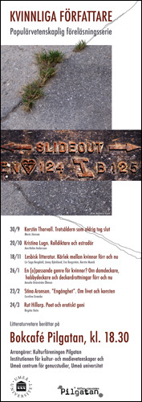
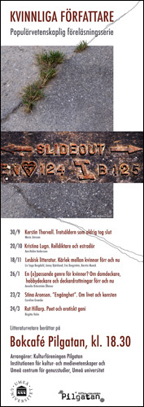

Affischer
Några affischer producerade under 2000-talet för feministiska/genusvetenskapliga/litterära sammanhang i samarbete med genusvetare, universitetet och Café Pilgatan, samt den första affischen för Holmöns Visfestival från starten 1994.
 

 
